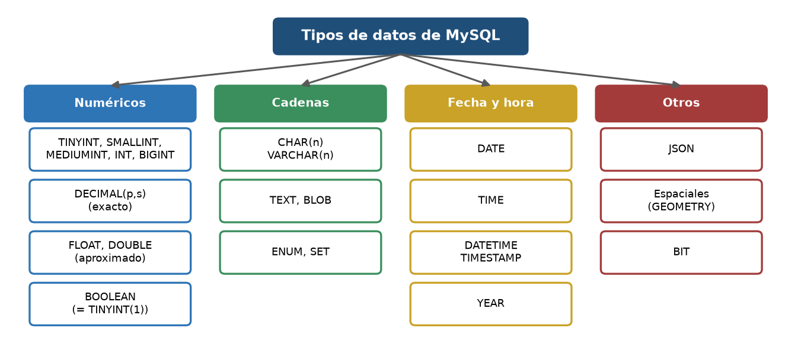
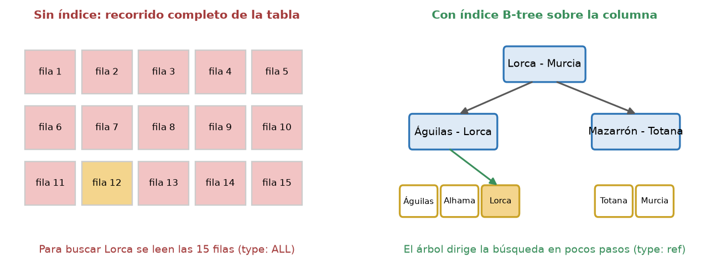
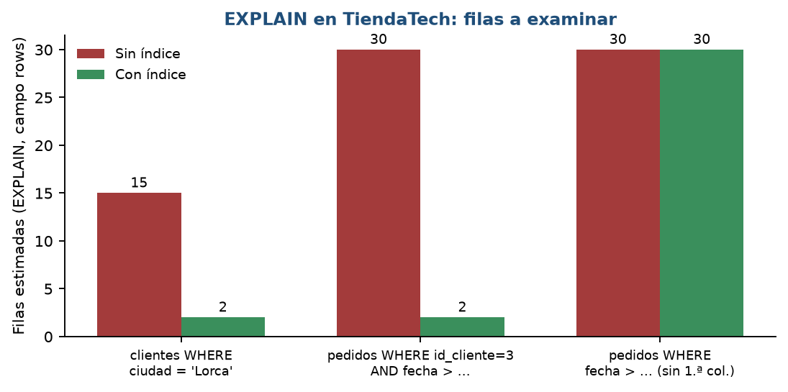
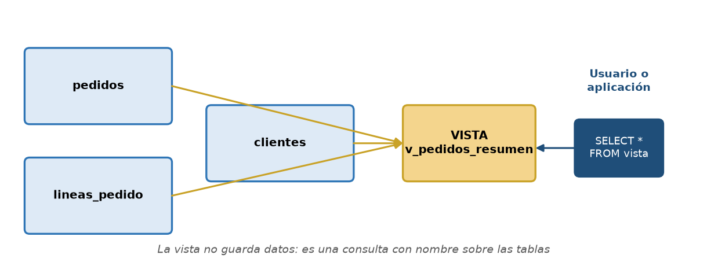
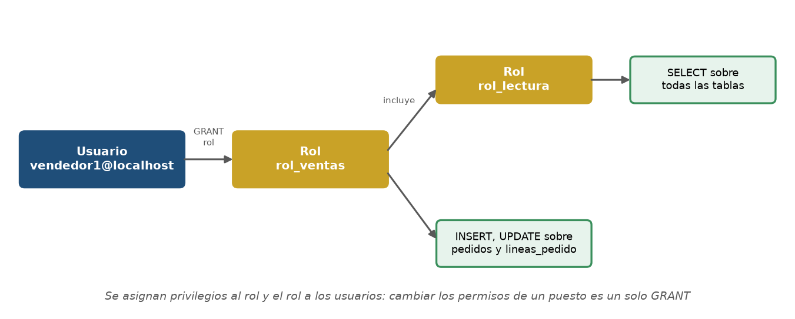

Inicio › UT3
Qué se trabaja
- DDL:
CREATE,ALTER,DROP; tipos de datos, claves y restricciones (PRIMARY KEY,FOREIGN KEY,UNIQUE,CHECK). - Vistas, índices, usuarios, roles y privilegios (DCL).
- Juegos de caracteres, cotejamientos y copias de seguridad.
Pruébalo en el laboratorio
UT3 · Crear una tabla con restricciones y probarlasUT3 · Violar una restricción (verás el error)UT3 · Una vistaUT3 · Índices y plan de ejecuciónUT3 · Cotejamiento en SQLite (BINARY / NOCASE)
Figuras de la unidad




